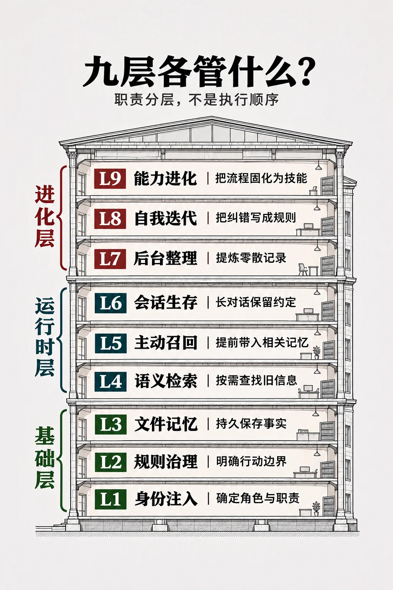
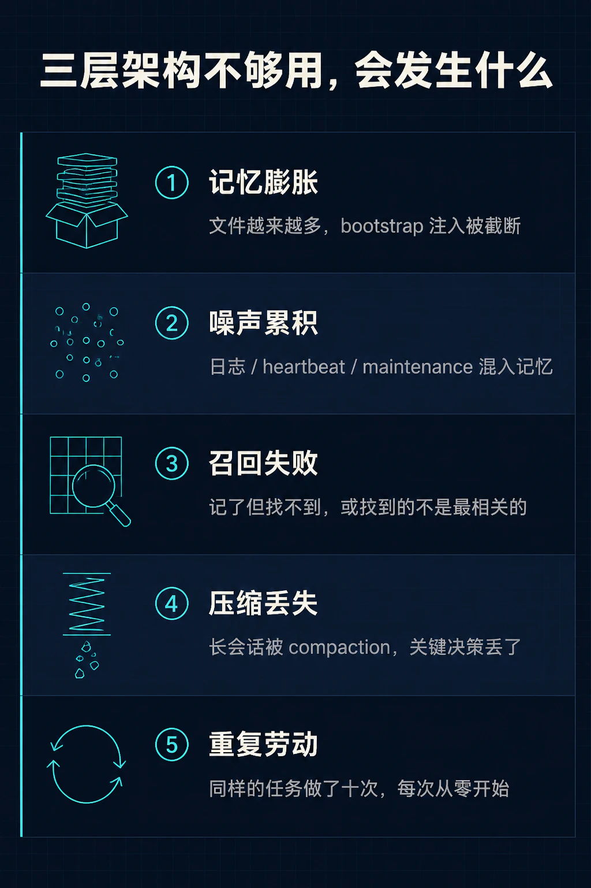
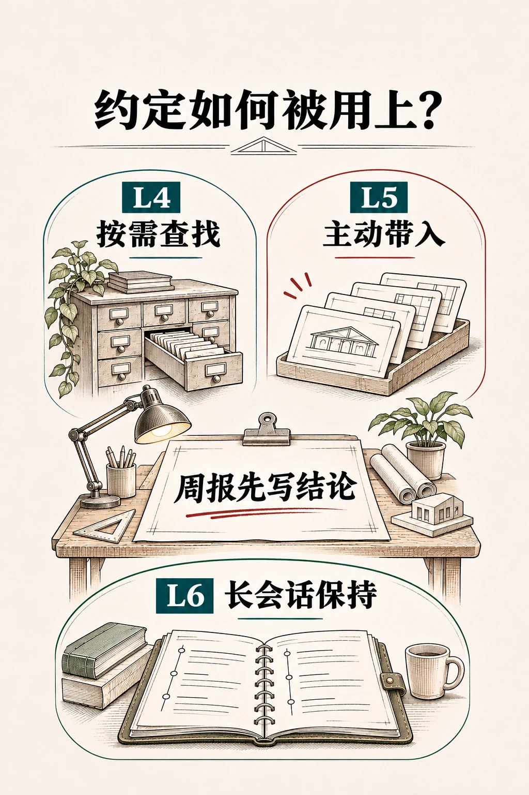
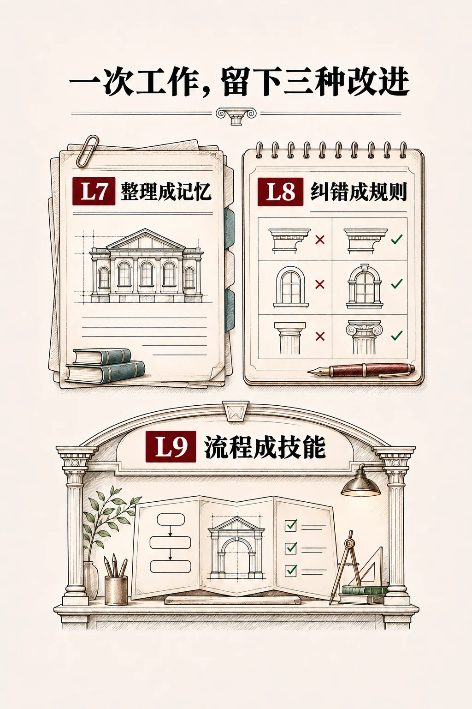
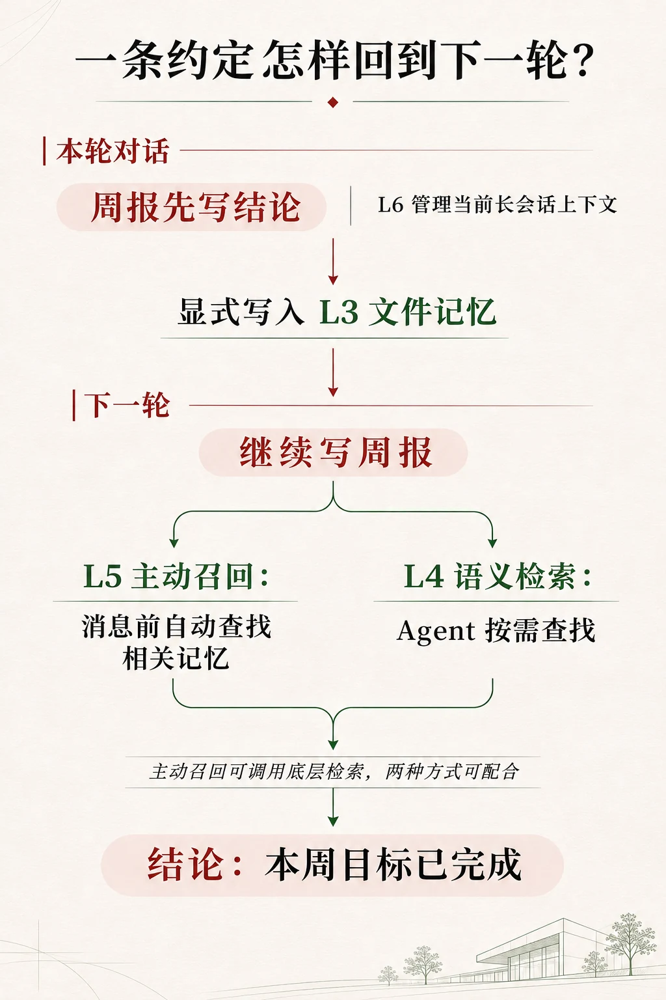
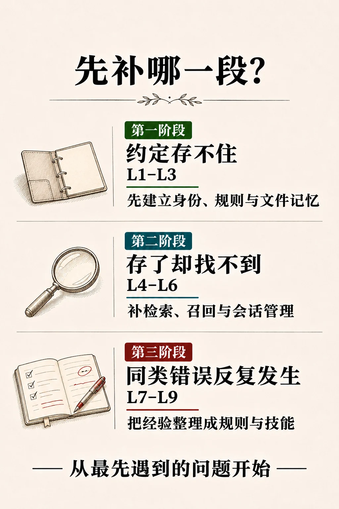

HTML → 图文号 / 小红书图集
把一篇长 HTML 文章交给 Agent，自动产出 8-10 张统一风格的卡片图 + 配套文案，直接发小红书 / 公众号图文号。所有图由顶级文生图模型（GPT Image 2 等）生成，不是模板拼接。
示例图集：上下文管理九层塔
以一篇 22k 字技术深度长文为输入，由 Agent 拆解、编写提示词并生成的 8 张示例卡片。
01 / 封面
02 / 九层全景



03 / 基础层

04 / 运行时层

05 / 进化层

06 / 跨轮运行

07 / 从哪里开始

08 / 封底
← 横向滑动查看全部 8 张 · 点击单图放大 →
一条约定，怎么回到下一轮？
今天说过“周报先写结论”，下次写周报时，Agent 怎么用上这条约定？ 九层塔把职责分成三组：基础层确定身份、规则和长期记忆；运行时层负责查找、召回与会话管理；进化层把工作经验整理成记忆、规则和技能。 先看第 2 张认清九层分工，再跟着第 6 张走一遍这条约定。如果准备搭自己的系统，第 7 张可以帮你判断先补哪一段。
工作流
Skill 在你的 agent（Claude / Codex 等）里跑，浏览器只负责呈现结果。
1
在 agent 里装 Skill
给你的 Claude / Codex 装上 html-to-wechat Skill 包，让 agent 学会“看一篇 HTML 文章 → 拆图集 → 写提示词 → 使用可用的生图工具”这条流程。
2
跑一条命令
把 HTML 文件交给 Agent，明确要求生成图集。agent 在本地完成内容拆解、生图、文案生成，输出到一个 session 目录。
3
本页面预览 + 下载
agent 跑完后给你一个本地 URL 自动打开本页面的 app 态：复制单图重生提示词、拖排、一键下载 zip、复制文案。